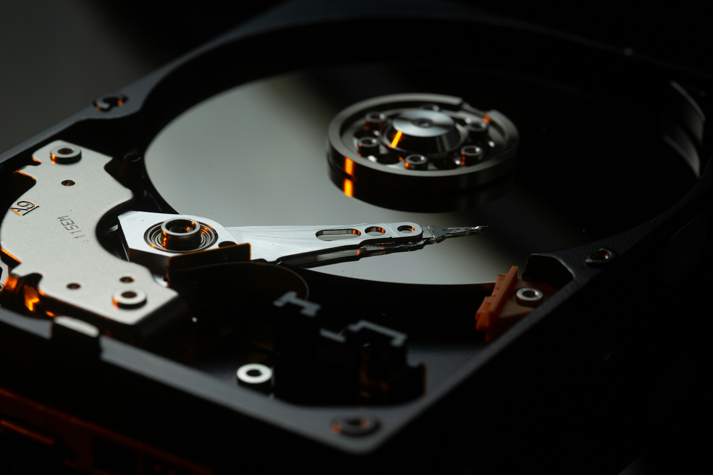
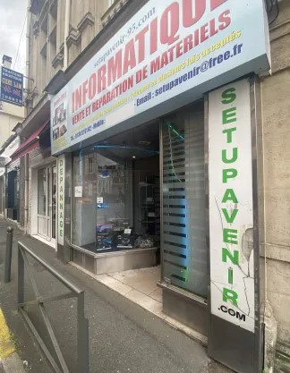

Setup
Avenir
Votre spécialiste PC depuis 20 ans
Réparation, montage, récupération de données, dépannage à domicile — une expertise reconnue par des centaines de clients satisfaits dans le Val-d'Oise.
Les clients peuvent passer un appel au 01 34 12 61 82 24h sur 24.
Réparation Rapide
Diagnostic gratuit sur unités centrales uniquement
Récupération de Données
Disques durs, SSD, cartes SD, clés USB
Dépannage à Domicile
Intervention dans un rayon de 300 m (GPS)
Mar – Sam : 10h30–19h
Lun : 10h30–13h • 85 Rue des Chesneaux, 95160 Montmorency
Nos Services Principaux
De la simple panne à la récupération de données complexe, nous accompagnons particuliers et professionnels.

Réparation & Maintenance
Diagnostic, remplacement de pièces, nettoyage, changement de pâte thermique — tout pour redonner vie à votre machine.

Récupération de Données
Votre disque dur est mort, formaté ou corrompu ? Nous récupérons vos fichiers sur HDD, SSD, M.2, SD card, clés USB et plus encore.

PC Gamer & Configuration
Montage PC sur mesure, configuration gaming, devis personnalisé pour des performances optimales selon votre budget.

Installation & Formatage
Installation Windows 10/11 (même sur PC non-compatible), formatage, réinitialisation, installation drivers et Pack Office.
Scan, Copies & Impressions
Besoin d'un scan ou d'une impression ? Le magasin propose aussi ce service pratique.
Dépannage à Domicile
Intervention rapide à moins de 300 m du magasin (GPS) pour les dépannages urgents chez vous.

20 ans de confiance
dans le Val-d'Oise
Depuis plus de 20 ans, Setup Avenir est l'adresse de référence pour l'informatique à Montmorency et ses alentours. Nous nous sommes forgé une réputation solide grâce à un service rigoureux, transparent et accessible à tous.
Particuliers, familles, étudiants, petites entreprises — nous avons réparé, configuré et sauvegardé des milliers de machines. Notre priorité : vous rendre votre outil de travail (et de loisir) en parfait état, au meilleur prix.
Des centaines de clients satisfaits en témoignent